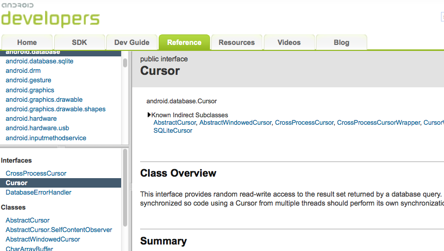

Scala on Android
Jan Berkel (@jberkel)
Jan Berkel (@jberkel)
public class MyActivity extends android.app.Activity {
@Override public void onCreate(Bundle b) {
super.onCreate(b);
BatteryHelper.initialize(this);
}
}
trait BatteryAware extends Activity {
override def onCreate(b: Bundle) {
// register battery handler
}
override def onPause() { ... }
}
class MyActivity extends Activity
with BatteryAware
with Logger {
}

Cursor c = resolver.query(...);
List<MyModel> l = new ArrayList<MyModel>();
while (c != null && c.moveToNext()) {
l.add(new MyModel.fromCursor(c));
}
if (c != null) c.close();
class NiceCursor(c: Cursor) extends Iterable[Cursor] {
def iterator = new Iterator[Cursor] {
def hasNext = c.getCount > 0 && !c.isLast
def next() = { c.moveToNext(); c }
}
}
implicit def NiceCursor(c: Cursor) = new NiceCursor(c)
def query[T](uri: Uri)(fun: Cursor => T) = {
val cursor = resolver.query(uri)
try {
fun(cursor)
} finally {
cursor.close()
}
}
// one liner
val l = query(...)(_.map(MyModel.fromCursor(_)))
locationManager.addGpsStatusListener(
new GpsStatusListener() {
public void onGpsStatusChanged(int evt) {
System.out.printn(evt)
}
}
}
// vs.
locationManager.addGpsStatusListener(println(_))
https://github.com/pivotal/robolectric
https://github.com/jbrechtel/robospecs
lazy val track = ...
it should "insert an read back a track" in {
val uri = provider.insert(Content.TRACKS.uri,
track.buildContentValues())
val read = query(uri, 1)(_.map(new Track(_))).head
read.id should equal(track.id)
read.title should equal(track.title)
// etc.
}
However, Android developer guidelines say:
Avoid Creating Unnecessary Objects
But performance is improving (parallel GC, JIT etc)
https://github.com/jberkel/android-plugin/ https://github.com/rst/positronic_net